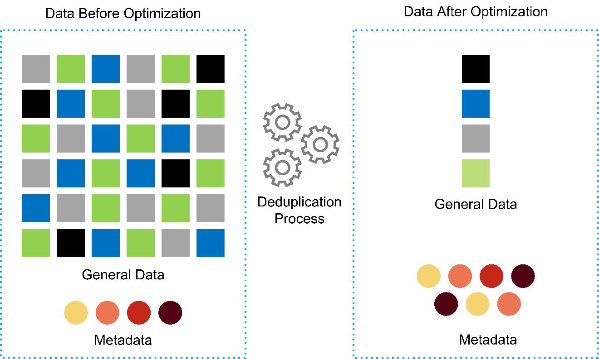
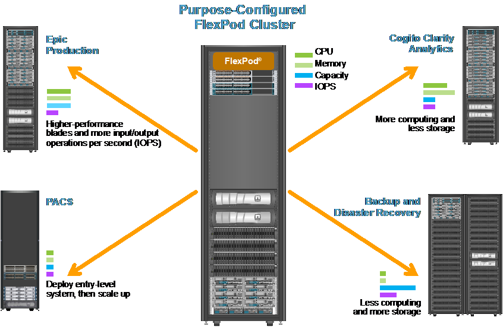

TR-4693: Epic EHR용 FlexPod 데이터 센터 구축 가이드
기여자
Brian O는 NetApp Ganesh Kamath, NetApp Mike Brennan, Cisco입니다
파트너 후원:
이 기술 보고서는 FlexPod 시스템에 Epic을 구축하려는 고객을 위한 것입니다. Epic의 FlexPod 아키텍처에 대해 간략하게 설명하고 의료 관리를 위해 Epic을 구축하기 위한 FlexPod의 설정 및 설치에 대해 알아봅니다.
Epic 하이퍼스페이스, InterSystems Caché 데이터베이스, Cogito Clarity 분석 및 보고 제품군, Epic 애플리케이션 계층을 호스팅하는 서비스 서버를 호스팅하기 위해 구축된 FlexPod 시스템은 신뢰할 수 있는 고성능 인프라를 신속하게 구축할 수 있는 통합 플랫폼을 제공합니다. FlexPod 통합 플랫폼은 숙련된 FlexPod 채널 파트너가 구축하며 Cisco 및 NetApp 기술 지원 센터에서 지원합니다.
전반적인 솔루션 이점
의료 조직에서는 FlexPod 아키텍처를 기반으로 Epic 환경을 실행하여 직원 생산성을 높이고 자본 및 운영 비용을 줄일 수 있습니다. FlexPod Datacenter with Epic은 의료 업계에서 다음과 같은 여러 이점을 제공합니다.
-
* 운영 간소화 및 비용 절감. * 기존 독점 RISC/UNIX 플랫폼을 어디에서나 임상의를 지원할 수 있는 보다 효율적이고 확장 가능한 공유 리소스로 교체하여 비용 및 복잡성을 제거합니다. 이 솔루션은 더 높은 리소스 사용률을 제공하여 ROI를 높여줍니다.
-
* 더 빠른 인프라 구축 * 기존 데이터 센터든 원격 위치든 상관없이 FlexPod Datacenter with Epic의 통합 및 테스트를 거친 설계를 통해 고객은 적은 노력으로 새로운 인프라를 신속하게 가동 및 실행할 수 있습니다.
-
* 스케일아웃 아키텍처. * 실행 중인 애플리케이션을 재구성하지 않고 SAN 및 NAS를 테라바이트에서 수십 페타바이트 단위로 확장할 수 있습니다.
-
무중단 운영 * 비즈니스 중단 없이 스토리지 유지보수, 하드웨어 라이프사이클 운영, 소프트웨어 업그레이드를 수행할 수 있습니다.
-
* 보안 멀티 테넌시. * 이 이점은 가상화된 서버 및 스토리지 공유 인프라의 증가하는 요구를 지원하여 특히 데이터베이스 및 소프트웨어의 여러 인스턴스를 호스팅하는 경우 시설별 정보의 안전한 멀티 테넌시를 가능하게 합니다.
-
풀링된 리소스 최적화 * 이 이점은 물리적 서버 및 스토리지 컨트롤러 수를 줄이고, 워크로드 수요를 로드 밸런싱하고, 사용률을 향상하는 동시에 성능을 개선할 수 있습니다.
-
* QoS(서비스 품질). * FlexPod는 전체 스택에서 QoS를 제공합니다. 업계 최고 수준의 QoS 스토리지 정책을 통해 공유 환경에서 차별화된 서비스 수준을 지원합니다. 이러한 정책을 통해 워크로드에 맞는 성능을 최적화하고 급등하는 애플리케이션을 격리 및 제어하는 데 도움을 줄 수 있습니다.
-
스토리지 효율성 * NetApp 7:1 스토리지 효율성 보장을 통해 스토리지 비용을 절감합니다.
-
민첩성 * FlexPod 시스템에서 제공하는 업계 최고의 워크플로우 자동화, 오케스트레이션 및 관리 툴을 통해 IT 부서는 비즈니스 요청에 훨씬 더 빠르게 대응할 수 있습니다. 이러한 비즈니스 요청은 Epic 백업 및 추가 테스트 및 교육 환경의 프로비저닝에서 인구 건강 관리 이니셔티브를 위한 분석 데이터베이스 복제까지 다양합니다.
-
* 생산성. * 최적의 최종 사용자 환경을 위해 이 솔루션을 신속하게 구축하고 확장할 수 있습니다.
-
* Data Fabric. * NetApp Data Fabric 아키텍처는 물리적 경계 및 애플리케이션 전반에 걸쳐 데이터를 제공합니다. NetApp Data Fabric은 데이터 중심 세계에서 데이터 중심 기업을 위해 구축되었습니다. 데이터는 여러 위치에서 생성되고 사용되며 다른 위치, 애플리케이션 및 인프라와 활용되어 공유되어야 합니다. 고객은 일관되고 통합된 데이터를 관리할 방법을 원합니다. Data Fabric은 데이터의 제어 능력을 높이고 점점 더 복잡해지는 IT 복잡성을 단순화하는 방법을 제공합니다.
FlexPod
Epic EHR 인프라를 위한 새로운 인프라 접근 방식
의료 서비스 공급자 조직은 업계 최고의 Epic 전자 의료 기록(EHR)에 투자함으로써 얻을 수 있는 이점을 활용해야 한다는 압박을 받고 있습니다. 미션 크리티컬 애플리케이션의 경우 고객이 Epic 솔루션을 위한 데이터 센터를 설계할 때 데이터 센터 아키텍처에 대한 다음과 같은 목표가 식별되는 경우가 많습니다.
-
Epic 애플리케이션의 고가용성
-
고성능
-
데이터 센터에 Epic을 구현하는 용이성
-
새로운 Epic 릴리즈 또는 애플리케이션을 사용하여 비즈니스 성장을 도모할 수 있는 민첩성과 확장성
-
비용 효율성
-
Epic 지침 및 타겟 플랫폼과 연계
-
관리 용이성, 안정성 및 지원 용이성
-
강력한 데이터 보호, 백업, 복구 및 비즈니스 연속성
Epic 사용자는 조직의 발전을 거듭하여 책임감 있는 조직으로 거듭하고 묶인 보상 모델에 적응하는 과정에서 필요한 Epic 인프라를 더욱 효율적이고 민첩한 IT 제공 모델로 제공해야 하는 과제를 안고 있습니다.
지난 10년 동안 Epic 인프라는 독점형 버전의 UNIX 및 기존 SAN 스토리지 어레이를 실행하는 독점적 RISC 프로세서 기반 서버로 구성되어 있었습니다. 이러한 서버 및 스토리지 플랫폼은 가상화를 거의 제공하지 않으며 IT 예산 제약을 가중하여 엄청난 자본 및 운영 비용을 초래할 수 있습니다.
Epic은 이제 RHEL(Red Hat Enterprise Linux)을 실행하는 VMware ESXi로 가상화된 Intel Xeon 프로세서를 탑재한 Cisco UCS(Unified Computing System)로 구성된 운영 대상 플랫폼을 지원합니다. 이 플랫폼은 ONTAP을 실행하는 NetApp 스토리지에 대한 Epic의 High Comfort Level 등급과 함께 Epic 데이터 센터 최적화의 새로운 시대가 시작되었습니다.
사전 검증된 통합 인프라의 가치
EPIC는 지연 시간이 짧고 예측 가능한 시스템 성능과 고가용성을 제공하기 위한 핵심 요구 사항으로 인해 고객의 하드웨어 요구 사항에 따라 규범적으로 규정되어 있습니다.
Cisco와 NetApp의 전략적 파트너십을 통해 사전 검증된 엄격한 테스트를 거친 FlexPod는 예측 가능한 짧은 지연 시간의 시스템 성능과 고가용성을 제공하도록 특별히 설계되고 제작되었습니다. 이 접근 방식은 Epic의 높은 편안함과 Epic EHR 시스템 사용자에게 가장 빠른 응답 시간을 제공합니다.
Cisco와 NetApp의 FlexPod 솔루션은 Epic 시스템 요구사항을 충족해야 하는 고성능 모듈식 사전 검증된 통합 가상화 솔루션으로 효율성, 확장성 및 비용 효율적인 플랫폼 다음과 같은 기능을 제공합니다.
-
* 모듈식 아키텍처 * FlexPod는 각 특정 워크로드에 맞게 특별 구성된 FlexPod 플랫폼을 통해 Epic 모듈식 아키텍처의 다양한 요구사항을 해결합니다. 모든 구성요소는 클러스터 서버 및 스토리지 관리 패브릭과 일관된 관리 툴셋을 통해 연결됩니다.
-
* 애플리케이션 구축 가속화 * 사전 검증된 아키텍처를 통해 구현 통합 시간과 위험을 줄여 Epic 프로젝트 계획을 신속하게 진행할 수 있습니다. Epic을 위한 NetApp OnCommand WFA(인력 자동화 OnCommand) 워크플로우에서 Epic 백업을 자동화하고 지원되지 않는 맞춤형 스크립트의 필요성을 제거합니다. Epic의 초기 출시, 하드웨어 교체 또는 확장 중 어떤 용도로 솔루션을 사용하든 더 많은 리소스를 프로젝트의 비즈니스 가치로 이동할 수 있습니다.
-
* 컨버지드 스택의 각 레벨별로 업계 최고 수준의 기술 * Cisco, NetApp, VMware 및 Red Hat은 서버, 네트워킹, 스토리지 및 오픈 시스템 Linux의 각 범주에서 업계 분석가에 의해 1위 또는 2위로 선정되었습니다.
-
* 표준화되고 유연한 IT를 통한 투자 보호 * FlexPod 참조 아키텍처는 새로운 제품 버전 및 업데이트를 예상하고 있으며, 향후 기술이 출시될 때 이를 수용할 수 있도록 철저한 지속적인 상호 운용성 테스트를 실시할 예정입니다.
-
* 광범위한 환경에 걸쳐 검증된 구축 * 주요 하이퍼바이저, 운영 체제, 애플리케이션 및 인프라 소프트웨어를 통해 사전 테스트되고 공동 검증을 거친 FlexPod는 Epic의 주요 고객 조직에 설치되어 있습니다.
검증된 FlexPod 아키텍처 및 공동 지원
FlexPod는 검증된 데이터 센터 솔루션으로, 성능에 영향을 주지 않고 증가하는 워크로드 수요를 지원하기 위해 쉽게 확장 가능한 유연한 공유 인프라를 제공합니다. 이 솔루션은 FlexPod 아키텍처를 활용하여 다음과 같은 FlexPod의 모든 이점을 제공합니다.
-
* Epic 워크로드 요구사항을 충족하는 성능 * 참조 워크로드 요구사항(소규모, 중간 규모, 대규모)에 따라 필요한 I/O 프로필을 충족하기 위해 다양한 ONTAP 플랫폼을 구축할 수 있습니다.
-
* 임상 데이터 증가를 쉽게 수용할 수 있는 확장성 * 기존 제한 없이 필요에 따라 가상 머신(VM), 서버 및 스토리지 용량을 동적으로 확장
-
* 효율성 향상. * 통합 가상화 인프라를 사용하면 관리 시간과 TCO를 모두 줄일 수 있습니다. Epic 소프트웨어의 성능을 높이면서 데이터를 더 쉽게 관리하고 효율적으로 저장할 수 있습니다. NetApp OnCommand WFA 자동화를 통해 솔루션을 단순화하여 테스트 환경의 업데이트 시간을 몇 시간 또는 며칠에서 몇 분으로 단축합니다.
-
* 위험 감소. * 구축 추측 작업을 없애고 지속적인 워크로드 최적화를 지원하는 정의된 아키텍처 기반의 사전 검증된 플랫폼을 통해 비즈니스 중단을 최소화합니다.
-
* FlexPod 공동 지원. * NetApp과 Cisco는 FlexPod 통합 인프라의 고유한 지원 요구사항을 해결하기 위해 강력하고 확장 가능하며 유연한 지원 모델인 공동 지원을 확립했습니다. 이 모델은 NetApp과 Cisco의 경험, 리소스, 기술 지원 전문 지식을 결합하여 고객의 FlexPod 지원 문제를 어디에 문제가 있든 파악하여 해결할 수 있는 효율적인 프로세스를 제공합니다. FlexPod 공동 지원 모델을 사용하면 FlexPod 시스템이 효율적으로 운영되고 최신 기술의 이점을 누릴 수 있으며 통합 문제를 해결할 수 있는 숙련된 팀을 제공할 수 있습니다.
FlexPod 공동 지원은 FlexPod 통합 인프라에서 Epic과 같은 비즈니스 크리티컬 애플리케이션을 실행하는 의료 조직에 특히 유용합니다.
다음 그림은 FlexPod 공동 지원 모델을 보여줍니다.

이러한 이점 외에도 FlexPod Datacenter 스택 및 Epic 솔루션의 각 구성 요소는 Epic EHR 워크플로우에서 특별한 이점을 제공합니다.
Cisco Unified Computing System
자체 통합 자체 인식 시스템인 Cisco UCS는 통합 I/O 인프라와 상호 연결된 단일 관리 도메인으로 구성됩니다. Cisco UCS for Epic 환경은 Epic 인프라 권장 사항 및 모범 사례에 따라 인프라를 통해 중요 환자 정보를 최대 가용성으로 제공할 수 있도록 지원해 왔습니다.
Cisco UCS 아키텍처 기반의 Epic은 Cisco UCS 기술과 함께 통합 시스템 관리, Intel Xeon 프로세서, 서버 가상화를 제공합니다. 이러한 통합 기술을 활용하면 데이터 센터 문제를 해결하고 고객이 Epic의 데이터 센터 설계 목표를 충족할 수 있습니다. Cisco UCS는 LAN, SAN 및 시스템 관리를 랙 서버, 블레이드 서버 및 VM을 위한 하나의 간소화된 링크로 통합합니다. Cisco UCS는 Cisco Unified Fabric과 Cisco FEX(Fabric Extender) 기술을 통합하여 Cisco UCS의 모든 구성요소를 단일 네트워크 패브릭 및 단일 네트워크 계층으로 연결하는 엔드 투 엔드 I/O 아키텍처입니다.
이 시스템은 여러 블레이드 섀시, 랙 서버 및 랙을 통합하고 확장하는 단일 가상 블레이드 섀시로서 설계되었습니다. 이 시스템은 기존 블레이드 서버 섀시를 채우는 여러 중복 장치를 제거하고 이더넷, FC 스위치 및 섀시 관리 모듈과 같은 복잡한 계층을 만들어 주는 매우 단순화된 아키텍처를 구현합니다. Cisco UCS는 모든 I/O 트래픽에 단일 관리 지점과 단일 제어 지점을 제공하는 이중화된 페어 Cisco Fabric Interconnect(FI)로 구성됩니다.
Cisco UCS는 서비스 프로필을 사용하여 Cisco UCS 인프라의 가상 서버가 올바르게 구성되었는지 확인합니다. 서비스 프로필에는 LAN 및 SAN 주소 지정, I/O 구성, 펌웨어 버전, 부팅 순서, 네트워크 VLAN, 물리적 포트 및 QoS 정책을 기반으로 합니다. 서비스 프로필은 동적으로 작성될 수 있으며 시스템의 모든 물리적 서버와 몇 시간 또는 며칠이 아닌 몇 분 내에 연결할 수 있습니다. 물리적 서버와 서비스 프로파일 연결은 간단한 단일 작업으로 수행되므로 물리적 구성 변경 없이 환경의 서버 간에 ID를 마이그레이션할 수 있습니다. 장애가 발생한 서버에 대한 교체를 신속하게 베어 메탈 프로비저닝할 수 있도록 지원합니다.
서비스 프로필을 사용하면 기업 전체에서 서버가 일관성 있게 구성되도록 할 수 있습니다. Cisco UCS Central은 여러 Cisco UCS 관리 도메인을 사용할 때 글로벌 서비스 프로필을 사용하여 도메인 전체에서 구성 및 정책 정보를 동기화할 수 있습니다. 유지 관리를 한 도메인에서 수행해야 하는 경우 가상 인프라를 다른 도메인으로 마이그레이션할 수 있습니다. 이 접근 방식은 단일 도메인이 오프라인일 때도 애플리케이션이 고가용성을 계속 실행할 수 있도록 하는 데 도움이 됩니다.
Cisco UCS는 다년간 Epic과 함께 철저한 테스트를 거쳐 서버 구성 요구사항을 충족함을 입증했습니다. Cisco UCS는 고객의 “Epic 하드웨어 구성 가이드”에 나열된 지원되는 서버 플랫폼입니다.
Cisco Nexus를 참조하십시오
Cisco Nexus 스위치 및 MDS 다계층 디렉터는 엔터프라이즈급 연결 및 SAN 통합을 제공합니다. Cisco 멀티 프로토콜 스토리지 네트워킹은 FC, FICON(Fibre Connection), FCoE(FC over Ethernet), iSCSI(SCSI over IP), FCIP(FC over IP)와 같은 유연성과 옵션을 제공하여 비즈니스 위험을 줄입니다.
Cisco Nexus 스위치는 단일 플랫폼에서 가장 포괄적인 데이터 센터 네트워크 기능 세트 중 하나를 제공합니다. 데이터 센터와 캠퍼스 코어 모두를 위한 고성능 및 고밀도를 제공합니다. 또한 복원력이 뛰어난 모듈식 플랫폼에서 데이터 센터 통합, 행 종료 및 데이터 센터 인터커넥트 구축을 위한 전체 기능 세트를 제공합니다.
Cisco UCS는 컴퓨팅 리소스를 Cisco Nexus 스위치 및 통합 I/O 패브릭과 통합하여 스토리지 I/O, 스트리밍 데스크톱 트래픽, 관리 및 임상 및 비즈니스 애플리케이션 액세스를 비롯한 다양한 유형의 네트워크 트래픽을 식별 및 처리합니다.
-
* 인프라 확장성 * 가상화, 효율적인 전력 및 냉각, 자동화, 고밀도 및 성능으로 클라우드 확장이 모두 효율적인 데이터 센터 성장을 지원합니다.
-
* 운영 연속성. * 이 설계에는 하드웨어, NX-OS 소프트웨어 기능 및 관리가 통합되어 다운타임이 없는 환경을 지원합니다.
-
* 전송 유연성. * 비용 효율적인 솔루션으로 새로운 네트워킹 기술을 점진적으로 도입합니다.
Cisco UCS와 Cisco Nexus 스위치, MDS 멀티레이어 디렉터는 Epic을 위한 컴퓨팅, 네트워킹, SAN 연결 솔루션을 제공합니다.
NetApp ONTAP를 참조하십시오
ONTAP 소프트웨어를 실행하는 NetApp 스토리지는 Epic 워크로드에 필요한 짧은 지연 시간의 읽기/쓰기 응답 시간과 IOPS를 제공하면서 전체 스토리지 비용을 줄여줍니다. ONTAP은 All-Flash 및 하이브리드 스토리지 구성을 모두 지원하여 Epic 요구사항을 충족하는 최적의 스토리지 플랫폼을 제공합니다. NetApp 플래시 가속 시스템은 Epic High Comfort Level의 등급을 받았으며 Epic 고객은 지연 시간에 민감한 Epic 작업에 대한 성능 및 응답 속도를 제공할 수 있습니다. 또한 NetApp은 단일 클러스터에서 여러 장애 도메인을 생성하여 운영 환경을 운영 이외의 환경과 격리할 수 있습니다. NetApp은 ONTAP 최소 QoS로 워크로드에 대한 최소 성능 수준을 보장하여 성능 문제를 줄입니다.
ONTAP 소프트웨어의 스케일아웃 아키텍처는 다양한 I/O 워크로드에 유연하게 대응할 수 있습니다. 모듈식 스케일아웃 아키텍처를 제공하는 한편, 임상 애플리케이션에 필요한 처리량과 짧은 지연 시간을 제공하기 위해 All-Flash 구성은 일반적으로 ONTAP 아키텍처에서 사용됩니다. Epic은 2020년에 All-Flash 어레이가 필요하며, 현재 전 세계적으로 500만 명 이상의 고객이 사용하고 있습니다. AFF 노드를 동일한 스케일아웃 클러스터와 하이브리드(HDD 및 플래시) 스토리지 노드로 결합하여 높은 처리량의 대규모 데이터 세트를 저장하는 데 적합합니다. 고객은 Epic 환경(값비싼 SSD 스토리지)을 다른 노드의 경제적인 HDD 스토리지로 클론 복제, 복제, 백업할 수 있으며, SAN 기반 운영 디스크 풀 복제 및 백업에 대한 Epic 지침을 충족하거나 초과 충족할 수 있습니다. NetApp 클라우드 지원 스토리지와 Data Fabric을 사용하면 사내 또는 클라우드의 오브젝트 스토리지에 백업할 수 있습니다.
ONTAP은 Epic 환경에서 매우 유용한 기능을 제공하여 관리를 단순화하고, 가용성과 자동화를 늘리고, 필요한 총 스토리지 양을 줄입니다.
-
* 탁월한 성능 * NetApp AFF 솔루션은 동일한 유니파이드 스토리지 아키텍처, ONTAP 소프트웨어, 관리 인터페이스, 다양한 데이터 서비스 및 고급 기능 세트를 FAS 제품군의 나머지 부분과 공유합니다. 혁신적인 All-Flash 미디어와 ONTAP을 결합하여 업계 최고의 ONTAP 소프트웨어와 All-Flash 스토리지의 높은 IOPS와 일관되게 낮은 지연 시간을 제공합니다.
-
* 스토리지 효율성 * 중복제거, NetApp FlexClone, 인라인 압축, 인라인 컴팩션, 씬 복제를 통해 총 용량 요구사항 감소 씬 프로비저닝 및 애그리게이트 중복제거.
NetApp 중복제거는 FlexVol 볼륨 또는 데이터 구성요소에서 블록 레벨 중복제거를 제공합니다. 기본적으로, 중복제거는 중복된 블록을 제거해 고유한 블록만 FlexVol 볼륨 또는 데이터 구성요소에 저장합니다.
중복제거는 고도의 세분성을 제공하며 FlexVol 볼륨 또는 데이터 구성요소의 액티브 파일 시스템에서 작동합니다. 중복제거는 애플리케이션에 투명하므로 NetApp 시스템을 사용하는 모든 애플리케이션에서 생성된 데이터를 중복제거하는 데 사용할 수 있습니다. 볼륨 중복제거는 인라인 프로세스(Data ONTAP 8.3.2부터) 및/또는 백그라운드 프로세스로 실행할 수 있으며, CLI, NetApp System Manager 또는 NetApp OnCommand Unified Manager를 통해 자동 실행, 예약 또는 수동으로 실행하도록 구성할 수 있습니다.
다음 그림에서는 NetApp 중복 제거가 최고 수준에서 작동하는 방식을 보여 줍니다.

-
공간 효율적인 클로닝 * FlexClone 기능을 사용하면 즉각적으로 클론을 생성하여 백업 및 테스트 환경 업데이트를 지원할 수 있습니다. 이러한 클론은 변경된 경우에만 추가 스토리지를 사용합니다.
-
* 통합 데이터 보호. * 완전한 데이터 보호 및 재해 복구 기능을 통해 고객은 중요 데이터 자산을 보호하고 재해 복구를 제공할 수 있습니다.
-
* 무중단 운영 * 데이터를 오프라인으로 전환하지 않고도 업그레이드 및 유지 관리를 수행할 수 있습니다.
-
* Epic Workflow Automation. * NetApp은 OnCommand WFA 워크플로우를 설계되어 Epic 백업 솔루션을 자동화 및 단순화하고 SUP, REL, REL VAL과 같은 테스트 환경을 업데이트할 수 있습니다. 따라서 지원되지 않는 맞춤형 스크립트가 필요하지 않아 NetApp 및 Epic 모범 사례에 필요한 구축 시간, 운영 시간, 디스크 용량이 줄어듭니다.
-
* QoS. * 스토리지 QoS를 통해 워크로드가 폭사할 가능성을 제한할 수 있습니다. 더 중요한 것은 QoS가 Epic 프로덕션과 같은 중요 워크로드에 대한 최소 성능을 보장할 수 있다는 것입니다. NetApp QoS는 경합을 제한하여 성능 관련 문제를 줄일 수 있습니다.
-
* OnCommand Insight Epic 대시보드 * Epic Pulse 툴은 애플리케이션 문제와 최종 사용자에게 미치는 영향을 파악할 수 있습니다. OnCommand Insight Epic 대시보드는 문제의 근본 원인을 파악하는 데 도움이 될 수 있으며 전체 인프라 스택을 완벽하게 파악할 수 있도록 지원합니다.
-
* Data Fabric. * NetApp Data Fabric은 클라우드와 사내 전반에서 데이터 관리를 단순화하고 통합하여 디지털 혁신을 가속합니다. 데이터 가시성과 통찰력, 데이터 액세스 및 제어, 데이터 보호 및 보안을 위한 일관되고 통합된 데이터 관리 서비스 및 애플리케이션을 제공합니다. NetApp은 AWS, Azure, Google 퍼블릭 클라우드 및 IBM Cloud 클라우드와 통합되어 고객에게 폭넓은 선택권을 제공합니다.
다음 그림에서는 Epic 워크로드를 위한 FlexPod를 보여 줍니다.

EPIC 개요
개요
EPIC는 위스콘신 주 베로나에 본사를 둔 소프트웨어 회사입니다. 회사 웹 사이트에서 다음 발췌 내용에서는 Epic 소프트웨어가 지원하는 기능의 범위를 설명합니다.
Epic은 다음과 같이 말합니다. "Epic은 중견 기업과 대기업 의료 그룹, 병원, 통합 의료 조직을 위한 소프트웨어를 만들고 있으며, 커뮤니티 병원, 교육 기관, 어린이 조직, 안전망 공급자, 멀티 병원 시스템을 비롯한 다양한 고객과 협력하고 있습니다. 당사의 통합 소프트웨어는 임상, 액세스 및 수익 기능을 포괄하며 가정으로 확장됩니다. ”
Epic 소프트웨어에서 지원하는 다양한 기능을 다루는 것은 본 문서의 범위를 벗어납니다. 하지만 스토리지 시스템의 관점에서 볼 때 모든 Epic 소프트웨어는 단일 환자 중심의 데이터베이스를 공유합니다. EPIC는 IBM AIX 및 Linux를 비롯한 다양한 운영 체제에서 사용할 수 있는 InterSystems Caché 데이터베이스를 사용합니다.
이 문서의 주요 목적은 Epic 소프트웨어 환경에서 사용되는 InterSystems Caché 데이터베이스의 성능 중심 요구사항을 충족할 수 있도록 FlexPod 스택(서버 및 스토리지)을 지원하는 것입니다. 일반적으로 운영 데이터베이스에 전용 스토리지 리소스가 제공되는 반면, 섀도우 데이터베이스 인스턴스는 Clarity 보고 툴과 같은 다른 Epic 소프트웨어 관련 구성 요소와 보조 스토리지 리소스를 공유합니다. 애플리케이션 및 시스템 파일에 사용되는 것과 같은 기타 소프트웨어 환경 스토리지는 보조 스토리지 리소스에서도 제공됩니다.
특정 Epic 워크로드를 위해 특별 제작되었습니다
Epic은 서버, 네트워크, 스토리지 하드웨어, 하이퍼바이저, 운영 체제를 재판매하지는 않지만 회사에는 인프라 스택의 각 구성요소에 대한 특정 요구사항이 있습니다. 이에 따라 Cisco와 NetApp은 상호 협력을 통해 FlexPod 데이터 센터를 성공적으로 구성, 구축 및 지원하여 고객의 Epic 운영 환경 요구사항을 충족할 수 있도록 했습니다. Epic은 테스트, 기술 문서 작성, 상호 고객 성공 사례 증가에 따라 FlexPod 데이터 센터의 Epic 고객 요구 사항을 충족하는 데 있어 매우 편안함을 느낄 수 있었습니다. “Epic Storage Products and Technology Status” 문서와 “Epic Hardware Configuration Guide”를 참조하십시오. ”
완벽한 Epic 참조 아키텍처는 모놀리식 아키텍처가 아니라 모듈식입니다. 아래 그림에서는 각각 고유한 워크로드 특성을 가진 5개의 개별 모듈을 보여 줍니다.

서로 연결되어 있지만 서로 다른 모듈이 있기 때문에 Epic 고객들은 스토리지와 서버의 특수한 사일로를 구입하여 관리해야 하는 경우가 많습니다. 여기에는 기존 계층 1 SAN을 위한 공급업체의 플랫폼, NAS 파일 서비스를 위한 다른 플랫폼, FC, FCoE, iSCSI, NFS 및 SMB/CIFS의 프로토콜 요구 사항에 적합한 플랫폼이 포함될 수 있습니다. 플래시 스토리지를 위한 별도의 플랫폼, 이러한 사일로를 가상 스토리지 풀로 관리하기 위한 어플라이언스 및 툴
ONTAP을 통해 FlexPod을 연결하면 각 타겟 워크로드에 최적화된 맞춤형 노드를 구축하여 규모의 경제를 실현하고 일관된 컴퓨팅, 네트워크, 스토리지 데이터 센터의 운영 관리를 간소화할 수 있습니다.
캐시 운영 데이터베이스
Caché는 InterSystems에서 제작하며 Epic이 구축된 데이터베이스 시스템입니다. Epic의 모든 환자 데이터는 Caché 데이터베이스에 저장됩니다.
InterSystems Caché 데이터베이스에서 데이터 서버는 영구적으로 저장된 데이터의 액세스 포인트입니다. 응용 프로그램 서버는 데이터베이스 쿼리를 처리하고 데이터 서버에 데이터 요청을 합니다. 대부분의 Epic 소프트웨어 환경에서는 단일 데이터베이스 서버에서 대칭 멀티프로세서 아키텍처를 사용하여 Epic 애플리케이션의 데이터베이스 요청을 처리했습니다. 대규모 배포에서는 InterSystems의 Enterprise Caché 프로토콜을 사용하여 분산 데이터베이스 모델을 지원할 수 있습니다.
장애 조치 지원 클러스터 하드웨어를 사용하면 대기 데이터 서버가 운영 데이터 서버와 동일한 디스크(즉, 스토리지)에 액세스하여 하드웨어 장애 발생 시 처리 책임을 맡을 수 있습니다.
또한, 상호 시스템은 섀도, 재해 복구 및 고가용성(HA) 요구사항을 충족하는 기술을 제공합니다. 시스템 간 섀도우 기술을 사용하여 캐시 데이터베이스를 운영 데이터 서버에서 하나 이상의 보조 데이터 서버로 비동기식으로 복제할 수 있습니다.
Cogito Clarity
Cogito Clarity는 Epic의 통합 분석 및 보고 제품군입니다. Cogito Clarity는 생산 캐시 데이터베이스 사본부터 환자 진료 개선, 임상 성능 분석, 수익 관리 및 규정 준수 측정에 도움이 되는 정보를 제공합니다. OLAP 환경에서 Cogito Clarity는 Microsoft SQL Server 또는 Oracle RDBMS를 활용합니다. 이 환경은 캐시 운영 데이터베이스 환경과 다르기 때문에 Cisco 및 NetApp이 SQL Server 및 Oracle 환경에 대해 검증된 설계 가이드를 따라 Cogito Clarity 요구사항을 지원하는 FlexPod 플랫폼을 설계하는 것이 중요합니다.
Epic 하이퍼스페이스 데스크톱 서비스
Hyperspace는 Epic 제품군의 프레젠테이션 구성 요소입니다. Caché 데이터베이스에서 데이터를 읽고 쓰며 사용자에게 제공합니다. 대부분의 병원 및 병원 직원은 Hyperspace 애플리케이션을 사용하여 Epic과 상호작용합니다.
하이퍼스페이스를 클라이언트 워크스테이션에 직접 설치할 수 있지만, 많은 의료 조직에서는 Citrix XenApp 팜이나 VDI(Virtual Desktop Infrastructure)를 통해 애플리케이션 가상화를 사용하여 사용자에게 애플리케이션을 제공합니다. ESXi를 사용하여 XenApp 서버 팜 가상화가 지원됩니다. 구성 및 구현 지침은 "참조" 섹션에서 ESXi용 FlexPod의 검증된 설계를 참조하십시오.
전체 VDI Citrix XenDesktop 또는 VMware Horizon View 시스템을 구축하려는 고객은 최적의 임상 워크플로우 경험을 위해 주의를 기울여야 합니다. 정확한 구성을 얻기 위한 기본 단계는 사용자 프로필의 자세한 매핑을 비롯하여 프로젝트의 범위를 명확하게 이해하고 문서화하는 것입니다. 많은 사용자 프로필에는 Epic 이외의 애플리케이션에 대한 액세스가 포함되어 있습니다. 프로파일에서 변수는 다음과 같습니다.
-
인증, 특히 이마바타 또는 이와 유사한 SSO(Single Sign-on)는 유목민 청능사를 위한 것입니다
-
PACS 이미지 뷰어
-
드래곤 NaturallySpeaking과 같은 딕테이션 소프트웨어 및 장치
-
Hyland OnBase 또는 Perceptive Software 통합과 같은 문서 관리
-
3M Health Care 또는 OptumHealth의 의료 정보 관리 코딩과 같은 부서 애플리케이션
-
고객이 계속 사용할 수 있는 사전 Epic 기존 EMR 또는 매출 주기 앱
-
서버에서 비디오 가속 카드를 사용해야 할 수 있는 화상 회의 기능
VMware Horizon View 또는 Citrix XenDesktop에서 특정 인증을 받은 FlexPod 리셀러는 Cisco 및 NetApp Epic 솔루션 설계자 및 프로페셔널 서비스 공급업체와 협력하여 고객의 특정 VDI 요구사항에 맞는 솔루션을 범위와 설계합니다.
재해 복구 및 섀도 복사본
-
Active-Active 이중 데이터 센터로 전환 *
Epic 소프트웨어 환경에서는 환자 중심의 단일 데이터베이스가 구축됩니다. EPIC의 하드웨어 요구 사항은 운영 캐시 데이터 서버를 운영 데이터베이스 서버로 호스팅하는 물리적 서버를 의미합니다. 이 서버에는 운영 데이터베이스 인스턴스에 속하는 파일을 위한 전용 고성능 스토리지가 필요합니다. HA의 경우 Epic은 동일한 파일에 액세스할 수 있는 장애 조치 데이터베이스 서버를 사용할 수 있도록 지원합니다.
일반적으로 프로덕션 데이터에 대한 읽기 전용 액세스를 제공하기 위해 보고 섀도 데이터베이스 서버가 구축됩니다. 운영 캐시 데이터 서버의 백업 섀도잉으로 구성된 캐시 데이터 서버를 호스팅합니다. 이 데이터베이스 서버의 스토리지 용량 요구 사항은 운영 데이터베이스 서버와 동일합니다. 이 스토리지는 워크로드 특성 보고가 서로 다르기 때문에 성능 관점과 다르게 크기가 조정됩니다.
또한 Epic의 SRO(읽기 전용) 기능을 지원하기 위해 섀도우 데이터베이스 서버를 구축할 수 있으며, 이 기능을 통해 읽기 전용 모드의 운영 복사본에 액세스할 수 있습니다. 비즈니스 연속성을 위해 이러한 유형의 데이터베이스 서버를 읽기-쓰기 모드로 전환할 수 있습니다.
비즈니스 연속성 및 DR(재해 복구) 목표를 충족하기 위해 DR 섀도우 데이터베이스 서버는 일반적으로 프로덕션 및/또는 보고 섀도우 데이터베이스 서버와 지리적으로 멀리 떨어진 사이트에 구축됩니다. DR 섀도우 데이터베이스 서버는 운영 캐시 데이터 서버의 백업 섀도잉으로 구성된 캐시 데이터 서버도 호스팅합니다. 운영 사이트를 장시간 사용할 수 없는 경우 섀도우 읽기/쓰기 인스턴스로 작동하도록 구성할 수 있습니다. 보고 섀도우 데이터베이스 서버와 마찬가지로 데이터베이스 파일의 스토리지의 용량 요구 사항은 운영 데이터베이스 서버와 동일합니다. 반면, 이 스토리지는 비즈니스 연속성을 위해 성능 면에서 생산과 동일한 크기로 사이징됩니다.
Epic의 지속적인 가동 시간이 필요하고 여러 데이터 센터가 있는 의료 조직에서는 FlexPod을 사용하여 Epic의 배포를 위한 액티브-액티브 설계를 구축할 수 있습니다. 액티브-액티브 시나리오에서 FlexPod 하드웨어는 두 번째 데이터 센터에 설치되며 Epic을 위한 지속적인 가용성과 빠른 페일오버 또는 재해 복구 솔루션을 제공하는 데 사용됩니다. 고객에게 제공되는 “Epic 하드웨어 구성 가이드”는 Epic의 지침에 부합하는 액티브-액티브 아키텍처의 설계를 촉진하기 위해 Cisco 및 NetApp과 공유해야 합니다.
라이센싱 캐시
NetApp과 Cisco는 Epic의 플랫폼 마이그레이션 모범 사례에 따라 기존의 Epic 설치를 FlexPod 시스템으로 마이그레이션한 경험이 있습니다. 플랫폼 마이그레이션이 필요한 경우 세부 정보를 확인할 수 있습니다.
Epic으로 이동하거나 기존 고객이 하드웨어 및 소프트웨어 업데이트를 평가할 때 고려할 사항 중 하나는 Caché 데이터베이스의 라이센스입니다. Intersystems Caché는 플랫폼별 라이센스(단일 하드웨어 OS 아키텍처로 제한됨) 또는 플랫폼 독립적 라이센스로 구입할 수 있습니다. 플랫폼 독립적 라이센스를 사용하면 캐시 데이터베이스를 하나의 아키텍처에서 다른 아키텍처로 마이그레이션할 수 있지만, 플랫폼별 라이센스 이상의 비용이 듭니다.

|
플랫폼별 라이센스를 사용하는 고객은 플랫폼 전환을 위해 추가 라이센스 비용을 예산으로 책정해야 할 수 있습니다. |
EPIC 보관 고려 사항
-
RAID 성능 및 보호 *
Epic은 Epic의 정의 요구사항을 충족하는 수준의 데이터 보호 및 성능을 달성하는 NetApp RAID DP, RAID-TEC, WAFL 기술의 가치를 잘 알고 있습니다. 또한 NetApp 스토리지 시스템은 NetApp 효율성 기술을 활용하여 Epic 환경에 필요한 전체 읽기 성능을 제공하면서도 더 적은 디스크 드라이브를 사용할 수 있습니다.
Epic은 NetApp 사이징 방법을 사용하여 Epic 환경에서 사용할 NetApp 스토리지 시스템을 적절하게 사이징해야 합니다. 자세한 내용은 TR-3930i: NetApp Sizing Guidelines for Epic 을 참조하십시오. 이 문서를 보려면 NetApp Field Portal에 액세스해야 합니다.
-
프로덕션 디스크 그룹 격리 *
All-Flash 어레이의 스토리지 레이아웃에 대한 자세한 내용은 Epic All-Flash 참조 아키텍처 전략 핸드북을 참조하십시오. 요약하면 디스크 풀 1(운영)은 디스크 풀 2와 별도의 스토리지 장애 도메인에 저장해야 합니다. 동일한 클러스터의 ONTAP 노드는 장애 도메인입니다.
EPIC는 운영 데이터베이스뿐 아니라 모든 풀 사이즈 운영 데이터베이스에 플래시를 사용할 것을 권장합니다. 현재는 이 접근 방식이 권장사항일 뿐이며, 2020년까지 모든 고객에게 반드시 필요한 것이 될 것입니다.
운영 OLTP 데이터베이스가 초당 500만 건의 글로벌 참조를 초과할 것으로 예상되는 대규모 사이트의 경우, 운영 OLTP 데이터베이스의 성능에 미치는 영향을 최소화하기 위해 Cogito 워크로드를 세 번째 스토리지에 배치해야 합니다. 이 문서에 사용된 테스트 베드 구성은 All-Flash 어레이입니다.
-
고가용성 및 이중화 *
EPIC는 하드웨어 구성 요소 장애를 완화하기 위해 HA 스토리지 시스템을 사용할 것을 권장합니다. 이 권장 사항은 중복 전원 공급 장치와 같은 기본 하드웨어에서 다중 경로 네트워킹과 같은 네트워킹으로 확장됩니다.
스토리지 노드 레벨에서 Epic은 이중화를 사용하여 무중단 업그레이드와 무중단 스토리지 확장을 지원하는 것을 강조합니다.
풀 1 스토리지는 앞서 설명한 성능 격리를 위해 풀 2 스토리지와 별도의 디스크에 있어야 합니다. 두 NetApp 스토리지 어레이는 모두 기본적으로 즉시 제공됩니다. 이와 별도로 디스크 수준 장애 시 데이터 수준 이중화를 제공합니다.
-
스토리지 모니터링 *
EPIC는 효과적인 모니터링 툴을 사용하여 스토리지 시스템의 병목 현상을 식별하거나 예측할 것을 권장합니다.
ONTAP와 함께 번들로 제공되는 NetApp OnCommand Unified Manager를 사용하여 용량, 성능 및 여유 공간을 모니터링할 수 있습니다. OnCommand Insight 고객을 위해 Epic을 위한 Insight 대시보드가 개발되었으며 Epic Pulse 모니터링 툴이 제공하는 기능을 넘어 스토리지, 네트워크, 컴퓨팅에 대한 완벽한 가시성을 제공합니다. Pulse가 문제를 감지할 수 있지만 Insight는 영향을 미치기 전에 문제를 조기에 식별할 수 있습니다.
-
스냅샷 기술 *
EPIC는 스토리지 노드 기반 NetApp Snapshot 기술이 기존의 파일 기반 백업에 비해 운영 워크로드에 미치는 성능 영향을 최소화할 수 있다는 점을 알고 있습니다. 스냅샷 백업을 운영 데이터베이스의 복구 소스로 사용하기 위한 경우 데이터베이스 일관성을 염두에 두고 백업 방법을 구현해야 합니다.
-
스토리지 확장 *
스토리지 핫스팟을 고려하지 않고 스토리지 확장에 대해 EPIC가 주의를 환기합니다. 예를 들어, 스토리지를 소단위 증분으로 자주 추가하는 경우 스토리지 핫스팟은 데이터가 여러 디스크에 고르게 분산되지 않는 곳에 데이터를 개발할 수 있습니다.
포괄적인 관리 툴 및 자동화 기능
Cisco UCS Manager 및 Cisco Unified Computing System
Cisco는 최상의 데이터 센터 인프라를 제공하기 위한 세 가지 핵심 요소인 단순화, 보안 및 확장성에 중점을 둡니다. 플랫폼 모듈성이 결합된 Cisco UCS Manager 소프트웨어는 간편하고 안전하며 확장 가능한 데스크톱 가상화 플랫폼을 제공합니다.
-
* Simplified. * Cisco UCS는 업계 표준 컴퓨팅에 대한 새롭고 혁신적인 접근 방식을 제공하며 모든 워크로드에 데이터센터 인프라의 코어를 제공합니다. Cisco UCS의 다양한 기능과 이점은 필요한 서버 수 감소, 서버당 사용되는 케이블 수 감소, Cisco UCS 서비스 프로필을 통해 서버를 신속하게 구축 또는 재프로비저닝할 수 있는 기능입니다. 관리할 서버 및 케이블 수가 적으며 서버 및 애플리케이션 워크로드 프로비저닝이 간소화되어 운영이 대폭 간소화됩니다. Cisco UCS Manager 서비스 프로필을 사용하면 몇 분 이내에 블레이드 및 랙 서버 점수를 프로비저닝할 수 있습니다. Cisco UCS 서비스 프로필은 서버 통합 실행서를 제거하고 구성 드리프트를 제거합니다. 이 접근 방식은 최종 사용자의 생산성 향상, 비즈니스 민첩성 향상, IT 리소스 할당 등의 작업을 수행합니다.
Cisco UCS Manager(UCSM)는 서버, 네트워크, 스토리지 액세스 인프라의 구성 및 프로비저닝과 같이 자주 발생하는 일상적인 데이터 센터 작업을 자동화합니다. 또한 Cisco UCS B-Series 블레이드 서버 및 메모리 설치 공간이 큰 C-Series 랙 서버는 높은 애플리케이션 사용자 밀도를 지원하여 서버 인프라 요구사항을 줄여줍니다.
간소화로 Epic 인프라를 더욱 빠르고 성공적으로 구축할 수 있습니다. Cisco와 VMware, Citrix 및 스토리지 파트너, IBM, NetApp, Pure Storage와 같은 기술 파트너는 FlexPod와 같은 사전 정의된 통합 아키텍처 인프라 패키지를 비롯하여 검증된 통합 아키텍처를 개발했습니다. Cisco 가상화 솔루션은 VMware vSphere, Linux, Citrix XenDesktop 및 XenApp에서 테스트되었습니다.
-
* 보안. * VM은 물리적 이전 VM보다 기본적으로 더 안전하지만 새로운 보안 문제를 야기합니다. 가상 데스크톱과 같은 공통 인프라를 사용하는 미션 크리티컬 웹 및 애플리케이션 서버는 이제 보안 위협에 대한 위험이 더 높습니다. 이제 가상 시스템 간 트래픽은 IT 관리자가 해결해야 하는 중요한 보안 고려 사항으로, 특히 VMware vMotion을 사용하는 VM이 서버 인프라 간에 이동하는 동적 환경에서는 더욱 그러합니다.
따라서 가상화는 정책 및 보안에 대한 가상 시스템 수준의 인식을 필요로 합니다. 특히 확장된 컴퓨팅 인프라에서 가상 시스템 이동성의 역동적이고 유동적인 특성을 고려할 때 더욱 그렇습니다. 새로운 가상 데스크톱을 손쉽게 확산하면 가상화 인식 네트워크 및 보안 인프라의 중요성이 더욱 커지고 있습니다. 데스크톱 가상화를 위한 Cisco UCS, Cisco MDS 및 Cisco Nexus 제품군 솔루션, Cisco 데이터 센터 인프라는 강력한 데이터 센터, 네트워크 및 데스크톱 보안을 제공하며 데스크톱에서 하이퍼바이저에 이르는 포괄적인 보안을 제공합니다. 가상 데스크톱, 가상 시스템 인식 정책 및 관리, LAN 및 WAN 인프라 전체의 네트워크 보안을 세분화하여 보안을 강화합니다.
-
* 확장성. * 가상화 솔루션의 성장은 필연적이므로 솔루션은 확장 가능하고 예측 가능한 확장성을 제공해야 합니다. Cisco 가상화 솔루션은 높은 가상 머신 밀도(서버당 VM)를 지원하며 추가 서버는 선형에 가까운 성능으로 확장할 수 있습니다. Cisco 데이터 센터 인프라는 성장을 위한 유연한 플랫폼을 제공하고 비즈니스 민첩성을 개선합니다. Cisco UCS Manager 서비스 프로필을 사용하면 온디맨드 호스트 프로비저닝을 수행할 수 있으며, 수십 개의 호스트를 구현하는 것처럼 쉽게 구축할 수 있습니다.
Cisco UCS 서버는 거의 선형적인 성능과 확장성을 제공합니다. Cisco UCS는 특허 받은 Cisco 확장 메모리 기술을 구현하여 더 적은 수의 소켓으로 대용량 메모리 공간을 제공합니다(2소켓 및 4소켓 서버에서 최대 1TB의 메모리로 확장 가능). Cisco UCS 서버 애그리게이트 대역폭은 서버당 최대 80Gbps까지 확장할 수 있으며, 노스바운드 Cisco UCS 패브릭 인터커넥트는 회선 속도로 2Tbps까지 출력할 수 있어 데스크톱 가상화 I/O 및 메모리 병목 현상을 방지할 수 있습니다. 지연 시간이 짧은 고성능 유니파이드 패브릭 기반 네트워킹 아키텍처를 갖춘 Cisco UCS는 고해상도 비디오 및 통신 트래픽을 비롯한 많은 양의 가상 데스크톱 트래픽을 지원합니다. 또한 Cisco 스토리지 파트너인 NetApp은 Cisco 가상화 솔루션의 일부로 부팅 및 로그인 폭증 시 데이터 가용성과 최적의 성능을 유지할 수 있도록 지원합니다.
Cisco UCS, Cisco MDS, Cisco Nexus 데이터 센터 인프라 설계는 데스크톱 가상화, 데이터 센터 애플리케이션, 클라우드 컴퓨팅을 지원하기 위해 서버, 네트워크, 스토리지 리소스를 투명하게 확장하여 성장에 대비한 탁월한 플랫폼을 제공합니다.
VMware vCenter Server를 참조하십시오
VMware vCenter Server는 의료 조직에서 Epic 환경을 관리할 수 있는 중앙 집중식 플랫폼을 제공하므로 의료 조직에서는 다음과 같이 안심하고 가상 인프라를 자동화 및 제공할 수 있습니다.
-
* 간단한 구축. * 가상 어플라이언스를 사용하여 vCenter Server를 빠르고 쉽게 구축할 수 있습니다.
-
* 중앙 집중식 제어 및 가시성 * 단일 위치에서 전체 vSphere 인프라스트럭처를 관리합니다.
-
* 사전 최적화. * 최대 효율성을 위해 리소스를 할당 및 최적화합니다.
-
* 관리. * 강력한 플러그인과 도구를 사용하여 관리를 단순화하고 제어를 확장합니다.
VMware vSphere용 Virtual Storage Console을 참조하십시오
NetApp의 VMware vSphere용 VSC(가상 스토리지 콘솔), VASA 공급자, SRA(스토리지 복제 어댑터)는 가상 어플라이언스입니다. 이 제품군에는 VSC, VASA Provider, SRA의 기능이 포함되어 있습니다. 이 제품군은 SRA 및 VASA Provider를 vCenter Server에 대한 플러그인으로 포함하여 NetApp 스토리지 시스템을 사용하는 VMware 환경에서 VM에 대한 엔드-투-엔드 라이프사이클 관리를 제공합니다.
VSC, VASA Provider, SRA를 위한 가상 어플라이언스는 VMware vSphere Web Client와 원활하게 통합되며 SSO 서비스를 사용할 수 있습니다. vCenter Server 인스턴스가 여러 개 있는 환경에서는 관리할 각 vCenter Server 인스턴스에 자체 등록된 VSC 인스턴스가 있어야 합니다. VSC 대시보드 페이지에서는 데이터 저장소 및 VM의 전체 상태를 빠르게 확인할 수 있습니다.
VSC, VASA Provider, SRA를 위한 가상 어플라이언스를 구축하면 다음과 같은 작업을 수행할 수 있습니다.
-
* VSC를 사용하여 스토리지를 구축 및 관리하고 ESXi 호스트를 구성할 수 있습니다. * VSC를 사용하면 VMware 환경의 스토리지 컨트롤러에 대한 자격 증명을 추가하고, 자격 증명을 제거하고, 자격 증명을 할당하고, 사용 권한을 설정할 수 있습니다. 또한 NetApp 스토리지 시스템에 연결된 ESXi 서버를 관리할 수도 있습니다. 몇 번의 클릭만으로 모든 호스트에 대해 호스트 시간 초과, NAS 및 다중 경로에 대해 권장되는 Best Practice 값을 설정할 수 있습니다. 저장소 세부 정보를 보고 진단 정보를 수집할 수도 있습니다.
-
* VASA Provider를 사용하여 스토리지 기능 프로필을 생성하고 알람을 설정합니다. * VASA Provider for ONTAP는 VASA Provider 확장을 활성화하는 즉시 VSC에 등록됩니다. 스토리지 용량 프로파일과 가상 데이터 저장소를 생성하여 사용할 수 있습니다. 볼륨 및 애그리게이트의 임계값이 거의 가득 찼을 때 알림을 보내도록 알람을 설정할 수도 있습니다. 가상 머신 디스크(VMDK)와 가상 데이터 저장소에서 생성된 VM의 성능을 모니터링할 수 있습니다.
-
* 재해 복구에 SRA를 사용합니다. * SRA를 사용하여 장애 시 재해 복구를 위해 사용자 환경에서 보호 및 복구 사이트를 구성할 수 있습니다.
NetApp OnCommand Insight and ONTAP를 참조하십시오
NetApp OnCommand Insight는 인프라 관리를 Epic 서비스 제공망으로 통합합니다. 이러한 접근 방식을 통해 의료 조직에서는 스토리지, 네트워크, 컴퓨팅 인프라를 더 효율적으로 제어, 자동화 및 분석할 수 있습니다. IT는 현재 인프라를 최적화하여 최대 이점을 얻고 구매할 항목과 시기를 결정하는 프로세스를 간소화할 수 있습니다. 또한 복잡한 기술 마이그레이션과 관련된 위험을 완화할 수 있습니다. 에이전트가 필요하지 않으므로 설치가 간단하고 업무 중단이 발생하지 않습니다. 설치된 스토리지 및 SAN 장치를 지속적으로 발견하고 전체 스토리지 환경을 완전히 파악할 수 있도록 상세 정보를 수집합니다. 잘못 사용되거나, 잘못 정렬되거나, 활용률이 낮거나, 격리된 자산을 신속하게 파악하고 다시 회수하여 향후의 확장을 가속화할 수 있습니다.
-
* 기존 리소스 최적화 * 문제를 방지하고 서비스 수준을 충족하기 위해 검증된 모범 사례를 사용하여 잘못 사용되거나 활용률이 낮거나 격리된 자산 식별
-
* 더 나은 결정을 내리십시오. * 실시간 데이터를 사용하면 용량 문제를 더욱 빠르게 해결하여 향후 구매를 정확하게 계획하고, 과도한 지출을 피하고, 자본 지출을 연기할 수 있습니다.
-
* IT 이니셔티브를 가속화하십시오. * 가상 환경을 보다 잘 이해하여 위험을 관리하고 다운타임을 최소화하고 클라우드 구축 시간을 단축하십시오.
-
* OnCommand Insight 대시보드. * 이 Epic 대시보드는 NetApp에서 Epic을 위해 개발했으며 전체 인프라 스택을 포괄적으로 보여 주는 것은 물론 Pulse 모니터링의 범위를 넘어섭니다. OnCommand Insight는 컴퓨팅, 네트워크 및 스토리지의 경합 문제를 사전에 식별할 수 있습니다.
NetApp OnCommand Workflow Automation를 참조하십시오
OnCommand WFA는 프로비저닝, 마이그레이션, 사용 중단, 데이터 보호 구성 등과 같은 스토리지 관리 작업을 자동화하는 데 도움이 되는 무료 소프트웨어 솔루션이며 클로닝할 수 있습니다. OnCommand WFA를 사용하여 프로세스를 통해 지정된 작업을 완료하기 위한 워크플로우를 구축할 수 있습니다.
워크플로는 다음과 같은 유형의 작업을 포함하여 여러 단계로 구성된 반복 및 절차 작업입니다.
-
데이터베이스 또는 파일 시스템용 스토리지 프로비저닝, 마이그레이션 또는 폐기
-
스토리지 스위치 및 데이터 저장소를 포함한 새로운 가상화 환경 설정
-
애플리케이션용 스토리지를 광범위한 오케스트레이션 프로세스의 일부로 설정
Epic 워크로드에 대한 권장 모범 사례에 따라 NetApp 스토리지를 신속하게 설정 및 구성할 수 있도록 워크플로우를 구축할 수 있습니다. Epic용 OnCommand WFA 워크플로우에서 백업 및 테스트 환경 업데이트를 자동화하기 위해 Epic 워크플로우에 필요한 고객 지원 스크립팅을 모두 대체
NetApp SnapCenter를 참조하십시오
SnapCenter는 데이터 보호를 위한 확장 가능한 유니파이드 플랫폼입니다. SnapCenter는 중앙 집중식 제어 및 감독 기능을 제공하므로 사용자가 애플리케이션 정합성이 보장되는 데이터베이스 정합성 보장 스냅샷 복사본을 관리할 수 있습니다. SnapCenter를 사용하면 기본 및 보조 대상(SnapMirror 및 SnapVault) 모두에서 가상 머신(VM)의 백업, 복원, 클론, 백업 및 검증을 수행할 수 있습니다. SnapCenter를 사용하면 데이터베이스, 스토리지 및 가상화 관리자가 단일 툴을 통해 다양한 애플리케이션, 데이터베이스 및 VM에 대한 백업, 복원 및 클론 작업을 관리할 수 있습니다.
SnapCenter를 사용하면 리소스 그룹 및 정책 관리(예약 및 보존 설정 포함)를 사용하여 중앙 집중식 애플리케이션 리소스 관리 및 간편한 데이터 보호 작업 실행이 가능합니다. SnapCenter는 대시보드, 다양한 보고 옵션, 작업 모니터링, 로그 및 이벤트 뷰어를 사용하여 통합 보고 기능을 제공합니다.
SnapCenter는 VMware, RHEL, SQL, Oracle 및 CIFS를 백업할 수 있습니다. NetApp은 Epic WFA 백업 워크플로우 통합과 결합되어 Epic 환경을 위한 백업 솔루션을 제공합니다.
 문서 변경 요청
문서 변경 요청 이 페이지 편집
이 페이지 편집 기여하는 방법 자세히 알아보기
기여하는 방법 자세히 알아보기